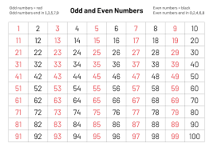

Vai all'indice
vai alla capitolo2
sistema binario
il compito di un sistema binario è quello di elaborare i dati acquisiti in input e di fornire in output i risultati conseguenti.
il sistema binario utilizza solo 1 e 0 è un sistema posizionale:il valore di una cifra dipende dalla sua posizione all'interno del numero.
ogni cifra binaria memorizzats fisicamente all' interno di un elaboratore è denomi nata in bit:un bit può rappresentase solamente due entità una corispondente allo 0 laltro corispodente alllo 1.
per aumentare la capacità di rappresentazione ,idevono essere raggruppati in sequenze lunghezza fissa
8bit byte
16bit word
32bit double word
64bit quad word

immagine
Un'immagine è una funzione 2D f(x.y) che rappresenta una misura opportuna di una o più caratteristiche (luminosità, colore, ecc.) di una data scena. Tipicamente L = 2k, dove k è il numero di bit usato per codificare ciascun pixel (profondità del pixel).
formato.jpg (perde qul che dati)
formato.gif(non perde i dati ma fa diventare molto ipiegato)
formato.png(fuziona minimo 48bit)

video
video e un sequenza di immagine che stato detto fotogrami (frames)
Con il termine FPS o Frame per secondo si intende la velocità del susseguirsi delle immagini in un video.
Per convenzione standard si è scelto all’inizio del cinema che la velocità migliore per ottenere un’immagine realistica simile all’esperienza della realtà fosse 24 fps.
Poi questo standard si è evoluto con la televisione, e la definizione di 2 principali sistemi di ripresa e riproduzione, il Pal ed il Ntsc
La differenza principale tra questi due sistemi è che il PAL (adottato in gran parte del mondo) si basa su un sistema a 25fps mentre il sistema NTSC (adottato principalmente negli USA) si basa su 30fps